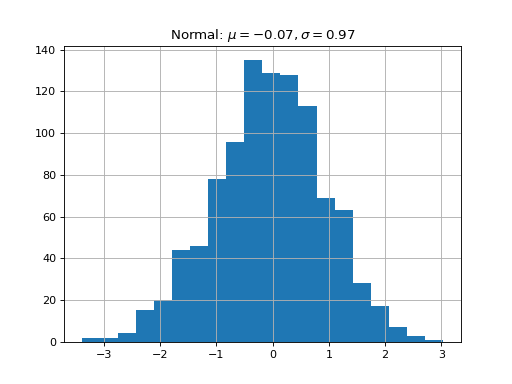
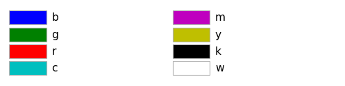

6. Plotting#
- class Plotting#
Bases:
objectHolds many methods for plotting data in Scarabaeus.
rgb(207 184 124);
rgb(207 184 124)
(
Source code,png,hires.png,pdf) (
Source code,png,hires.png,pdf) Methods
apply_scale_to_axes([scale])Method to apply logarithmic or linear scaling to the axes of the plots.
compare_state_errors_norm(solution2, ...[, ...])Compares the state errors and sigma values of two solutions by plotting them together.
get_fig_handle(fig_handle[, show, save_dir, ...])Get the figure handle from another class
plot_asteroid_3d([obj_file, scale_factor, ...])Plot a 3D representation of an asteroid, either from an object file or a simple spherical mesh.
plot_compare_state_error_norm(...[, title, ...])Plots state errors norm for multiple iterations on the same figure for comparison.
plot_covariance(P_bplane_parameters[, title])Given a B-plane covariance, plot a graphical representation.
plot_covariance_history(n_sigma[, title, ...])Plots the covariance history.
plot_gs_visibility(visibility_windows[, ...])Method to plot when the spacecraft can be seen by a set of ground stations
plot_measurement_availability(...[, scale, ...])Plots the availability of each measurement over time with x-axis labels as 'time - t_0' in integer days, where t_0 is the last time in combined_times.
plot_measurements_dataset(measurement_data)Method to plot the radiometric measurements as function of time.
plot_multiple_covariance(sc_states, ...[, ...])Plot multiple covariances corresponding to different spacecraft positions and their covariances in the B-plane.
plot_multiple_orbits_3d(positions_list[, ...])Method for plotting multiple 3D trajectories, with default view as XY-plane.
plot_opnav_measurements(opnav_measurements)Method to plot opnav measurements as function of time.
plot_orbit_3d(positions[, title, origin, ...])Method for plotting a single 3D trajectory
plot_parameters_errors(epochs, n_sigma[, ...])Plots the estimated parameters over time with error bars and shaded uncertainty bounds (±3σ).
plot_parameters_errors_norm(true_trajectory, ...)Plots the state errors and sigma bounds for each component of parameters.
plot_position_velocity(data[, times, title, ...])Method to plot the position-velocity as function of time.
plot_postfit_residuals(epochs, ...[, ...])Plots the postfit residuals for various measurements (e.g., range, range rate, OpNav u, OpNav v) dynamically based on dataset names.
plot_postfit_residuals_asynchronous(...[, ...])Plots the postfit residuals for various measurements (e.g., range, range rate, OpNav u, OpNav v) dynamically based on dataset names.
plot_prefit_residuals(n_sigma[, title, ...])Plots the prefit residuals for range and range rate measurements.
plot_radiometric_measurements(...[, title, ...])Method to plot the radiometric measurements as function of time.
plot_scenario_param([title, scale, ...])Plots the scenario paramters
plot_state_errors(true_trajectory, epochs, ...)Plots the state errors and sigma bounds for each component of position and velocity.
plot_state_errors_norm(true_trajectory, ...)Plots the state errors and sigma values over time.
plot_uv_measurements_over_time([scale, ...])Plot u vs v measurements, colored by time, and add subplots of u and v pixels over time with a semilog y-axis for the time.
plot_with_x_offset([x_offset_flag])Plot with an offset for x axis.
save_plot([save_dir, save_name, save_format])Method to have custom stlying for all plots within this class
time_series_basic_line(time, data[, title, ...])Method for plotting time series data on a line plot.
time_series_basic_scatter(time, data[, ...])Method for plotting time series data on a scatter plot.
- apply_scale_to_axes(scale='linxy')#
Method to apply logarithmic or linear scaling to the axes of the plots.
- Parameters:
ax (matplotlib.axes.Axes) – Matplotlib Axes Object
scale (str) – The scaling option. - “logx” : log scale on x-axis, linear on y-axis - “logy” : log scale on y-axis, linear on x-axis - “logxy” : log scale on both axes - “linx” : linear scale on x-axis, linear on y-axis - “liny” : linear scale on y-axis, linear on x-axis - “linxy” : linear scale on both axes (default)
- Returns:
The axis with applied scaling.
- Return type:
- compare_state_errors_norm(solution2, true_trajectory, epochs, n_sigma: int, labels: list[str] = ['w SNC', 'w/o SNC'], t_0: bool = True)#
Compares the state errors and sigma values of two solutions by plotting them together.
- Parameters:
solution1 – The first filter object to compare.
solution2 – The second filter object to compare.
true_trajectory (Trajectory) – The true trajectory.
epochs (EpochArray) – The array of epochs.
n_sigma (int) – The number of standard deviations for sigma.
labels (list[str]) – Labels for the solutions to be compared.
t_0 (bool) – If True, convert the x-axis to time in days relative to the final epoch.
- Returns:
None
- static get_fig_handle(fig_handle, show: bool = False, save_dir: str = None, save_name: str = None, save_format: str = None)#
Get the figure handle from another class
- Parameters:
fig_handle (matplotlib plt.figure() object) – Figure handle generated outside the Plotting class
show (bool) – Option to show plot. Defaults to False.
save_dir (str) – Save directory. Defaults to None.
save_name (str) – Figure saving name. Defaults to None.
save_format (str) – Figure saving format. Can be “pickle” or “png”. Defaults to None.
- static plot_asteroid_3d(obj_file=None, scale_factor=1.0, ax=None, radius=None, name='Asteroid')#
Plot a 3D representation of an asteroid, either from an object file or a simple spherical mesh.
Parameters: - obj_file (str, optional): Path to the asteroid 3D model file (e.g., .obj). If not provided, a simple spherical mesh is plotted. - scale_factor (float): Scaling factor to adjust the size of the asteroid. Default is 1.0. - ax (matplotlib.axes._subplots.Axes3DSubplot, optional): 3D axes to plot the asteroid on. If not provided, a new figure is created. - radius (float, optional): Radius of the asteroid in kilometers if a simple spherical mesh is used. Default is None. - name (str, optional): Name of the asteroid to display in the legend. Default is “Asteroid”.
Returns: - ax: The 3D axes containing the plot.
Raises: - ValueError: If both obj_file and radius are None.
- plot_compare_state_error_norm(true_trajectory, epochs_list, n_sigma, title='State Error Comparison', labels=None, t_0=True, scale='linxy', x_offset_flag=False)#
Plots state errors norm for multiple iterations on the same figure for comparison.
- Parameters:
solutions (list) – List of SolutionOD objects.
true_trajectory (Trajectory) – The true trajectory.
epochs_list (list) – List of EpochArray objects, one for each solution.
n_sigma (int) – The number of standard deviations for sigma.
title (str) – Title of the plot.
labels (list, optional) – Labels for the solutions (e.g., [‘IT1’, ‘IT2’, ‘IT3’]).
t_0 (bool, optional) – If True, convert the x-axis to time in days relative to the final epoch.
scale (str, optional) – Scale type for plots.
x_offset_flag (bool, optional) – If True, apply x-axis offset.
- Returns:
Figure object.
- Return type:
- plot_covariance(P_bplane_parameters, title: str = 'B-plane Covariance')#
Given a B-plane covariance, plot a graphical representation. It assumes no correlation between position in the B-plane and linearized time of flight.
- Parameters:
bplane (Bplane) – The Bplane Object
P_bplane_parameters (numpy.ndarray) – The B-plane covariance matrix.
title (str)
- plot_covariance_history(n_sigma, title: str = 'Covariance History', scale: str = 'linxy', x_offset_flag: bool = False)#
Plots the covariance history.
- Parameters:
solution_it (SolutionOD) – The SolutionOD object.
n_sigma (int) – The number of standard deviations to plot.
title (str) – Title of the plot.
scale (str, optional) – Scale type for plots.
x_offset_flag (bool, optional) – If True, apply x-axis offset.
- Returns:
Matplotlib figure object.
- Return type:
- static plot_gs_visibility(visibility_windows: dict, title: str = 'Ground Station Visibility Windows', epoch_start: str = None, show: bool = False, save_dir: str = None, save_name: str = None, save_format: str = None, scale: str = 'linxy')#
Method to plot when the spacecraft can be seen by a set of ground stations
- Parameters:
visibility_windows (dict) – dictionary of the GS visibilities
epoch_start (str) – Starting epoch
show (bool) – Option to show plot. Defaults to False.
save_dir (str) – Save directory. Defaults to None.
save_name (str) – Figure saving name. Defaults to None.
save_format (str) – Figure saving format. Can be “pickle” or “png”. Defaults to None.
scale (str) – Scaling option [‘logx’, ‘logy’, ‘logxy’, ‘linx’, ‘liny’, ‘linxy’]
title (str)
- plot_measurement_availability(measurement_mask, measurement_names, scale: str = 'linxy', x_offset_flag: bool = False)#
Plots the availability of each measurement over time with x-axis labels as ‘time - t_0’ in integer days, where t_0 is the last time in combined_times.
Args: - combined_times (np.ndarray): Array of combined unique epochs. - measurement_mask (np.ndarray): Mask array showing the availability of each measurement at each time. - measurement_names (list of str): List of names corresponding to each measurement type.
- static plot_measurements_dataset(measurement_data, title: str = None, show: bool = False, save_dir: str = None, save_name: str = None, save_format: str = None)#
Method to plot the radiometric measurements as function of time.
- plot_multiple_covariance(sc_states, sc_covariances, labels=None, zoom_flag=True, ast_covariances=None, scale: str = 'linxy', x_offset_flag: bool = False)#
Plot multiple covariances corresponding to different spacecraft positions and their covariances in the B-plane.
- Parameters:
bplane (Bplane) – The Bplane Object
sc_states (list of numpy.ndarray) – List of relative spacecraft states (position and velocity in J2000) at different epochs.
sc_covariances (list of numpy.ndarray) – List of covariance matrices for the spacecraft states in J2000.
labels (list of str) – List of labels for each ellipse (optional).
zoom_flag (bool) – Flag to indicate whether to apply zoom on the last ellipse and hide axes when zoomed.
scale (str, optional) – Scale type for plots.
x_offset_flag (bool, optional) – If True, apply x-axis offset.
- Returns:
None
- Return type:
None
- static plot_multiple_orbits_3d(positions_list, labels=None, origin=None, title: str = '@Sun, J2000', units: str = 'km', show: bool = False, save_dir: str = None, save_name: str = None, save_format: str = None, line_styles=None, colors=None, markers=None, view_xy_plane: bool = True)#
Method for plotting multiple 3D trajectories, with default view as XY-plane.
- Parameters:
positions_list (list) – list of several objects positions in X,Y,Z coordinates.
labels (list) – list of several objects labels. Defaults to None.
origin (np.array(,3)) – origin of the plot in X,Y,Z coordinates. Defaults to None.
title (str) – Title of plot. Defaults to “Reference Frame: J2000”.
units (str) – Units to use in the X,Y,Z labels. Defaults to “km”.
show (bool) – Option to show plot. Defaults to False.
save_dir (str) – Save directory. Defaults to None.
save_name (str) – Figure saving name. Defaults to None.
save_format (str) – Figure saving format. Defaults to None.
line_styles (list) – List of line styles for each orbit. Defaults to solid lines.
colors (list) – List of colors for each orbit. Defaults to default matplotlib colors.
markers (list) – List of markers for each orbit. Defaults to None (no markers).
view_xy_plane (bool) – Boolean to set the default view to XY-plane. Defaults to True.
- Returns:
Matplotlib figure object.
Method to plot opnav measurements as function of time.
- Parameters:
opnav_measurements (np.array) – array of opnav measurement
title (str) – Title of plot. Defaults to None.
show (bool) – Option to show plot. Defaults to False.
save_dir (str) – Save directory. Defaults to None.
save_name (str) – Figure saving name. Defaults to None.
save_format (str) – Figure saving format. Can be “pickle” or “png”. Defaults to None.
scale (str) – Scaling option [‘logx’, ‘logy’, ‘logxy’, ‘linx’, ‘liny’, ‘linxy’]
x_offset_flag (bool) – Offset value for X axis
- static plot_orbit_3d(positions, title: str = '3D Trajectory', origin=None, units: str = 'km', show: bool = False, save_dir: str = None, save_name: str = None, save_format: str = None)#
Method for plotting a single 3D trajectory
- Parameters:
positions (np.array(N,3)) – object position in X,Y,Z coordinates (no frame assuemd).
origin (np.array(,3)) – origin of the plot in X,Y,Z coordinates (no frame assumed). Defaults to None.
title (str) – Title of plot. Defaults to “3D Trajectory”.
units (str) – Units to use in the X,Y,Z labels. Defaults to “km”.
show (bool) – Option to show plot. Defaults to False.
save_dir (str) – Save directory. Defaults to None.
save_name (str) – Figure saving name. Defaults to None.
save_format (str) – Figure saving format. Can be “pickle” or “png”. Defaults to None.
- plot_parameters_errors(epochs: EpochArray, n_sigma: int, title='Parameters Errors', sample_points: int = 40, t_0: bool = True)#
Plots the estimated parameters over time with error bars and shaded uncertainty bounds (±3σ). Only a sample of sample_points is plotted to reduce clutter.
- Parameters:
solution_it (SolutionOD) – The SolutionOD object.
epochs (EpochArray) – The array of epochs.
n_sigma (int) – The number of standard deviations for uncertainty bounds.
title (str) – Title for the plot.
sample_points (int) – Number of data points to sample for plotting.
t_0 (bool) – If True, convert the x-axis to time in days relative to the final epoch.
- Returns:
List of figure objects.
- Return type:
- plot_parameters_errors_norm(true_trajectory: Trajectory, epochs: EpochArray, n_sigma: int, title: str = 'Parameters errors norm', t_0: bool = True, scale: str = 'linxy', x_offset_flag: bool = False)#
Plots the state errors and sigma bounds for each component of parameters.
- Parameters:
solution_it (SolutionOD) – The SolutionOD object.
true_trajectory (Trajectory) – The true trajectory of the object.
epochs (EpochArray) – The array of epochs.
n_sigma (int) – The number of standard deviations for the sigma bounds.
t_0 (bool) – If True, convert the x-axis to time in days relative to the final epoch.
title (str)
scale (str)
x_offset_flag (bool)
- Returns:
List of figure objects.
- Return type:
- static plot_position_velocity(data, times=None, title: str = 'Pos-Vel', show: bool = False, save_dir: str = None, save_name: str = None, save_format: str = None, scale: str = 'linxy', x_offset_flag: bool = False)#
Method to plot the position-velocity as function of time.
- Parameters:
data (np.array(n,6)) – Array of the state vector made by position and velocity
times (np.array()) – Time values
title (str) – Title of plot. Defaults to “Pos-Vel”.
show (bool) – Option to show plot. Defaults to False.
save_dir (str) – Save directory. Defaults to None.
save_name (str) – Figure saving name. Defaults to None.
save_format (str) – Figure saving format. Can be “pickle” or “png”. Defaults to None.
scale (str)
x_offset_flag (bool)
- plot_postfit_residuals(epochs: EpochArray, dataset_names, n_sigma, lasso_selection=False, scale: str = 'linxy', x_offset_flag: bool = False)#
Plots the postfit residuals for various measurements (e.g., range, range rate, OpNav u, OpNav v) dynamically based on dataset names. It handles residuals from any ground station (e.g., GS1, GS2) and groups them by measurement type.
- Parameters:
solution_it (SolutionOD) – The SolutionOD object.
epochs (EpochArray) – Array of epochs.
dataset_names (list) – List of dataset names.
n_sigma (float) – Number of standard deviations for the sigma lines.
lasso_selection (str) – To enable the lasso selection feature.
scale (str, optional) – Scale type for plots.
x_offset_flag (bool, optional) – If True, apply x-axis offset.
- Returns:
List of figure objects.
- Return type:
- plot_postfit_residuals_asynchronous(dataset_names, n_sigma, title='Postfit Residuals Asynchronous', time_vectors=None, scale: str = 'linxy', x_offset_flag: bool = False)#
Plots the postfit residuals for various measurements (e.g., range, range rate, OpNav u, OpNav v) dynamically based on dataset names. It handles residuals from any ground station (e.g., GS1, GS2) and groups them by measurement type. Datasets can have different lengths, and the x-axis will represent either the time vector or the number of measurements if no time vector is provided.
- Parameters:
solution_it (SolutionOD) – The SolutionOD object.
dataset_names (list) – List of dataset names.
n_sigma (float) – Number of standard deviations for the sigma lines.
title (str) – Title of the plot.
time_vectors (list, optional) – List of time vectors for each measurement type. If only one time vector is provided, it will be used for all measurement types. If not provided, the x-axis will represent the number of measurements.
scale (str, optional) – Scale type for plots.
x_offset_flag (bool, optional) – If True, apply x-axis offset.
- plot_prefit_residuals(n_sigma, title: str = 'Prefit Residuals', scale: str = 'linxy', x_offset_flag: bool = False)#
Plots the prefit residuals for range and range rate measurements.
- static plot_radiometric_measurements(radiometric_measurement, title: str = None, show: bool = False, save_dir: str = None, save_name: str = None, save_format: str = None, meas_name: str = 'meas_name', scale: str = 'linxy', x_offset_flag: bool = False)#
Method to plot the radiometric measurements as function of time.
- Parameters:
radiometric_measurement (list[EpochArray,np.array,ArrayWFrame]) – Dictionary of the measurement, generated from the MeasurementDataSet
title (str) – Title of plot. Defaults to None.
show (bool) – Option to show plot. Defaults to False.
save_dir (str) – Save directory. Defaults to None.
save_name (str) – Figure saving name. Defaults to None.
save_format (str) – Figure saving format. Can be “pickle” or “png”. Defaults to None.
scale (str) – Scaling option [‘logx’, ‘logy’, ‘logxy’, ‘linx’, ‘liny’, ‘linxy’]
x_offset_flag (bool) – Offset value for X axis
meas_name (str)
- plot_scenario_param(title: str = 'Desat Param', scale: str = 'linxy', x_offset_flag: bool = False)#
Plots the scenario paramters
- Parameters:
scenario (ScenarioSetup) – The ScenarioSetup object.
title (str) – Title of the plot.
scale (str, optional) – Scale type for plots.
x_offset_flag (bool, optional) – If True, apply x-axis offset.
- Returns:
None
- Return type:
None
- plot_state_errors(true_trajectory: Trajectory, epochs: EpochArray, n_sigma: int, title: str = 'State Errors', t_0: bool = True, scale: str = 'linxy', x_offset_flag: bool = False)#
Plots the state errors and sigma bounds for each component of position and velocity.
- Parameters:
solution_it (Solution) – Solution OD Object.
true_trajectory (Trajectory) – The true trajectory of the object.
epochs (EpochArray) – The array of epochs.
n_sigma (int) – The number of standard deviations for the sigma bounds.
tf (bool) – If True, convert the x-axis to time in days relative to the final epoch.
title (str)
t_0 (bool)
scale (str)
x_offset_flag (bool)
- Returns:
Figure object.
- Return type:
fig
- plot_state_errors_norm(true_trajectory: Trajectory, epochs: EpochArray, n_sigma: int, title: str = 'State Errors Norm', t_0: bool = True, scale: str = 'linxy', x_offset_flag: bool = False)#
Plots the state errors and sigma values over time.
- Parameters:
solution_it (Solution) – Solution OD Object.
true_trajectory (Trajectory) – The true trajectory.
epochs (EpochArray) – The array of epochs.
n_sigma (int) – The number of standard deviations for sigma.
t_0 (bool) – If True, convert the x-axis to time in days relative to the final epoch.
scale (str) – Scaling option [‘logx’, ‘logy’, ‘logxy’, ‘linx’, ‘liny’, ‘linxy’]
x_offset_flag (bool) – Offset value for X axis
title (str)
- Returns:
Figure object.
- Return type:
fig
- plot_uv_measurements_over_time(scale: str = 'linxy', x_offset_flag: bool = False)#
Plot u vs v measurements, colored by time, and add subplots of u and v pixels over time with a semilog y-axis for the time.
Parameters: measurements (scb.MeasurementDataSet): A dataset containing opnav measurements.
- plot_with_x_offset(x_offset_flag: bool = False)#
Plot with an offset for x axis.
- Parameters:
:type x_offset_flag
- static set_custom_styling()#
Method to have custom stlying for all plots within this class
- static time_series_basic_line(time, data, title: str = 'Line Plot', x_axis_label: str = 'Time', y_axis_label: str = 'Value', show: bool = False, save_dir: str = None, save_name: str = None, save_format: str = None, scale: str = 'linxy', x_offset_flag: bool = False)#
Method for plotting time series data on a line plot.
- Parameters:
time (np.array()) – timestamps values
data (np.array()) – data values
title (str) – Title of plot. Defaults to “Line Plot”.
x_axis_label (str) – X-axis label of plot. Defaults to “Time”.
y_axis_label (str) – Y-axis label of plot. Defaults to “Value”.
show (bool) – Option to show plot. Defaults to False.
save_dir (str) – Save directory. Defaults to None.
save_name (str) – Figure saving name. Defaults to None.
save_format (str) – Figure saving format. Can be “pickle” or “png”. Defaults to None.
scale (str) – Scaling option [‘logx’, ‘logy’, ‘logxy’, ‘linx’, ‘liny’, ‘linxy’]
x_offset_flag (bool) – Offset value for X axis
- static time_series_basic_scatter(time, data, title: str = 'Scatter Plot', x_axis_label: str = 'Time', y_axis_label: str = 'Value', show: bool = False, save_dir: str = None, save_name: str = None, save_format: str = None, scale: str = 'linxy', x_offset_flag: bool = False)#
Method for plotting time series data on a scatter plot.
- Parameters:
time (np.array()) – timestamps values
data (np.array()) – data values
title (str) – Title of plot. Defaults to “Scatter Plot”.
x_axis_label (str) – X-axis label of plot. Defaults to “Time”.
y_axis_label (str) – Y-axis label of plot. Defaults to “Value”.
show (bool) – Option to show plot. Defaults to False.
save_dir (str) – Save directory. Defaults to None.
save_name (str) – Figure saving name. Defaults to None.
save_format (str) – Figure saving format. Can be “pickle” or “png”. Defaults to None.
scale (str) – Scaling option [‘logx’, ‘logy’, ‘logxy’, ‘linx’, ‘liny’, ‘linxy’]
x_offset_flag (bool) – Offset value for X axis
- color_palettes = {'colorblind_friendly_palette': ['#E69F00', '#56B4E9', '#009E73', '#F0E442', '#0072B2', '#D55E00', '#CC79A7'], 'cu_palette': ['#E4B542', '#000000'], 'cyanR_palette': ['#17BECF', '#D95F02'], 'matplot_default_palette': ['#1f77b4', '#ff7f0e', '#2ca02c', '#8c564b', '#9467bd', '#d62728', '#e377c2', '#7f7f7f', '#bcbd22', '#17becf'], 'scb_palette': ['#4067BE', '#15788c', '#E4B542', '#000000']}#
{kind=link}
{kind=link}
{kind=link}
{kind=link}